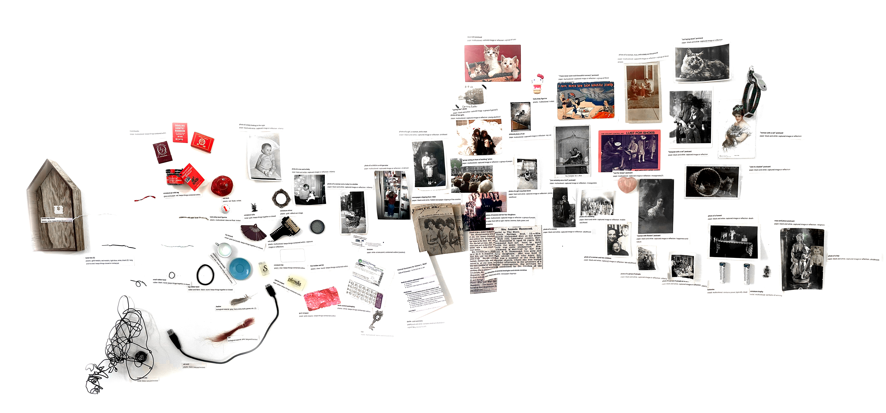

each piece is related to one another in some way, whether that be by material, function, physical appearance, or personal association. making your own connections between items is strongly encouraged.

behind the scenes footage and ambient field recordings